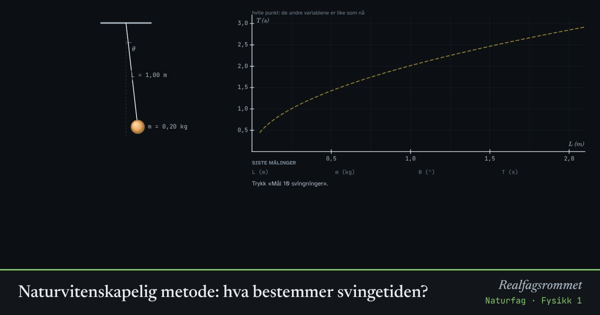

Naturvitenskapelig metode: hva bestemmer svingetiden?
Hva påvirker hvor lang tid en pendel bruker på én svingning: lengden, massen eller utslaget? Lag en hypotese, endre én variabel om gangen og mål.
Start animasjonen
Formler
Om animasjonen
En god undersøkelse endrer bare én variabel om gangen og holder de andre konstante. Da vet du hva som var årsaken.
Vi måler tiden for 10 svingninger og deler på 10. Da blir feilen fra reaksjonstiden ti ganger mindre per svingning.
Hver måling har litt tilfeldig usikkerhet, akkurat som når du tar tiden med stoppeklokke.
Resultatet: svingetiden avhenger av lengden. Massen spiller ingen rolle, og utslaget betyr lite så lenge det er lite.
Prøv dette
- Skriv en hypotese før du måler: hvilken variabel tror du betyr mest?
- Mål svingetiden for fem ulike lengder med samme masse og utslag. Hva slags sammenheng ser du?
- Hvorfor er det lurt å måle 10 svingninger i stedet for én?
- Hvor lang må en pendel være for at én svingning skal ta nøyaktig 2 s?
Kompetansemål
- Naturfag: Utforske en egen problemstilling og argumentere for valg av metode
- Naturfag: Hypoteser, modeller og teorier som forklarer verden
- Fysikk 1: Planlegge og gjennomføre forsøk, analysere data og trekke konklusjoner
- Biologi 1: Undersøkelser, data og resultater